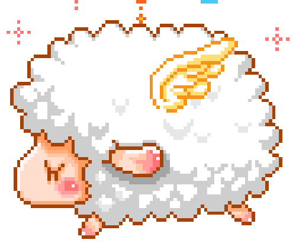

腦波可以被控制嘛？
想要控制腦波并非不行，這需要長時間的訓練，才能達到，當你輾轉難眠的時候就可以召喚近似δ波邊緣狀態的身心感覺，就可以有效的幫助睡眠啦

是指大腦內的神經細胞活動時所產生的電氣性擺動，它代表
腦的活動訊息。
人的睡眠品質好壞與δ波有非常直接的關聯，通常一夜正常的睡眠可以出現四至五次，這是一個深度睡眠的狀態，所以當你輾轉難眠的時候，就非常需要δ波的幫忙
想要控制腦波并非不行，這需要長時間的訓練，才能達到，當你輾轉難眠的時候就可以召喚近似δ波邊緣狀態的身心感覺，就可以有效的幫助睡眠啦
症狀為躺在床上，輾轉反側，往往一兩個小時才能睡著。
如果您患有憂鬱、焦慮，躁鬱症和創傷後壓力症候群
女性可能更容易出現失眠症狀。月經週期、停經期間的荷爾蒙變化，都可能造成失眠。
失眠狀況會隨著年齡增長而增加。尤其是超過60歲
女性可能更容易出現失眠症狀。月經週期、停經期間的荷爾蒙變化，都可能造成失眠。
若工作要求您在夜間上班或輪班，都會增加失眠的風險。
如果需要長途旅行，您的風險就會更高。穿越多個時區的時差，會導致失眠.
1.降低室內溫度。暖和的身體和涼爽的房間是快速入睡的絕佳組合
2.杜絕所有光源。不僅是電子設備的光，任何光線都可能阻礙睡眠
3.避免睡前洗熱水澡
4.堅持寫日記，如果你老是情不自禁地想東想西，不如把你的思緒全部寫成日記
5.減少噪音。可以使用白噪音發生器或者播放來自大自然的聲音的錄音
6.白天適度運動鍛煉
7.避免睡前飲用濃茶，咖啡
8.限制午睡時間（老年人盡量不要午睡
大部分的人在經驗到壓力、刺激、興奮、焦慮、生病、至高海拔的地方、睡眠規律改變（如時差、輪班的工作等）都會有短暫性失眠障礙。大部分這方面的失眠會隨著事件的消失或時間的拉長而改善。但是短暫性失眠如未接受適當的處理，有部分的人可能會導致慢性失眠。

重或持續性壓力，像重大身體疾病或開刀、親朋好友的過世、和嚴重的家庭、工作或人際關係的問題、男女朋友分手等皆可能會導致短期性失眠。此種失眠與壓力有明顯的相關性。和短暫性失眠一樣短期性失眠如未接受適當的處理有部分的人亦會導致慢性失眠。以上兩者又可合稱為急性失眠，其失眠原因通常較容易被發現。

是患者至失眠門診求診中，最常遇到的疾病類型，比起短暫性和短期性失眠，慢性失眠的原因是很複雜的且較難去發現，且許多的慢性失眠是多種原因合在一起所造成的。因此醫師需要細心的問診以尋找各種可能引起失眠的原因。
1.讓皮膚得到更充分的營養
2.控制體重
3.增加抵抗力
4.改善學習力
5.穩定情緒
6.維持心臟健康
7.提升運動表現
8.減少罹心腦血管及患糖尿病的風險
9.提升工作效率
症狀為睡得不安穩，時睡時醒，醒過來就難以入睡，有些人甚至半夜醒來就未再闔眼。